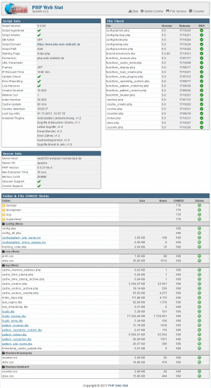

Sysinfo
The sysinfo.php gives you and us the possibility to view some of the main configuration settings of your stat without sharing any passwords.
Besides the general settings like domain names at the left top of the page, you can see on the right top some information about the file size and the file checksums.
So if you see a red symbol, the desired file has been modified or not belongs to the original stat version. So if you experience any red images you got to check it. Also the upload routine (ASCII or binary) can be the reason for red symbols. If so, take a look at Step 1 in the manual.
Microsoft Windows based server systems always display red symbols. Thats the only case where nothing has to be done.
At the bottom of the page, the check offers you some information about the desired file rights. If there is a red symbol occuring, please check back the file rights (CHMOD).
Microsoft Windows based server systems always show a red symbol. Thats the only case where nothing has to be done.
The sysinfo.php can be called in your browser or within the Admin-Center.